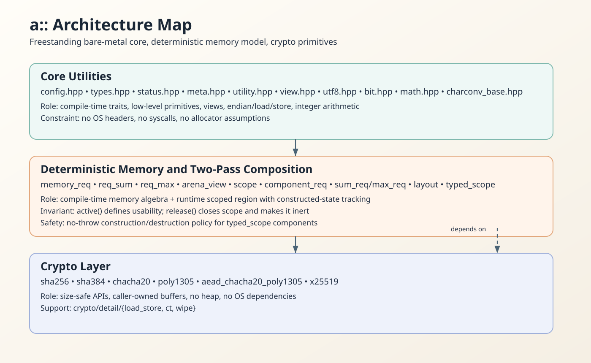
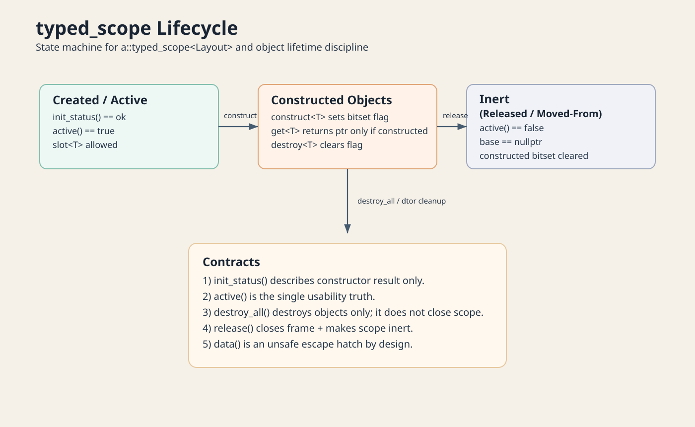

Freestanding Core
Типи, метапрограмування і low-level утиліти без платформних залежностей.
No OS includes Deterministic
a/ і всього публічного API a::
Це не просто довідник по хедерах. Тут зібраний цілісний портрет рівня a:
базові модулі, memory algebra, lifecycle-контракти typed_scope,
криптографічний шар a::crypto і прямі посилання на реальний код.
Типи, метапрограмування і low-level утиліти без платформних залежностей.
No OS includes Deterministic
memory_req, req_sum/req_max, arena_view, scope, typed_scope.
Unsafe hatch: data()
SHA-256/384, ChaCha20, Poly1305, AEAD, X25519 з caller-owned буферами.
No hidden heap
profile.hpp, contract.hpp, bounded.hpp для явної коректності і constrained value-моделі.
Hard-fail контракти Range-safe типи
#include "a/a.hpp"
struct font_scratch {
static constexpr a::memory_req requirement() noexcept { return {32 * 1024, 16}; }
};
struct image_scratch {
static constexpr a::memory_req requirement() noexcept { return {64 * 1024, 16}; }
};
using decode_layout = a::layout<font_scratch, image_scratch>;
void run(a::arena_view arena) {
a::typed_scope<decode_layout> scope(arena);
if (!scope.active()) {
return;
}
auto* font_mem = scope.slot<font_scratch>();
auto* image_mem = scope.slot<image_scratch>();
(void)font_mem;
(void)image_mem;
scope.release();
}Що робить цей приклад: визначає два compile-time компоненти, збирає typed layout, відображає слоти у пам'ять арени користувача і завершує lifetime через release().
На пальцях: ти виділив один буфер на старті, поклав у нього scratch для шрифтів і зображень, відпрацював і закрив scope.
Швидко зрозуміти структуру: що за що відповідає і де проходять межі шарів.
Стисла карта публічних типів, функцій і ключових інваріантів.
Практична логіка req_sum/req_max, layout offset-ів і arena-lifetime.
Як проектувати plan/build модулі з чітким контрактом пам'яті.
Алгоритми, usage-патерни та мінімальні правила безпечного застосування.
Готові шаблони для контекстів, scratch-пам'яті та typed construction.
Айсберг-onboarding: від compile/link бази до контрактів, arena, scope і freestanding архітектури.


Важливо: init_status()==ok не означає, що scope ще придатний до роботи.
Стан перевіряй через active() або operator bool().

Якщо bare-metal терміни ще нові, почни зі сторінки C++ Knowledge.
Якщо потрібна абсолютна точність по API, переходь у Source Reference і дивись конкретний хедер.
Короткі правила по контрактам винесені в a/CONTRACTS.md.